A year that moves
with the season.
From the Festival of Flowers in June to a single brave swim on New Year's Day — the calendar swells through spring and summer, then quietens to almost nothing in the depths of winter. Pick a month and we'll line up your evenings.
Some months overflow.
Others rest.
Each bar is a month; its height is how much is on. Spring wakes the coast up, summer runs hot every night, autumn winds down to the harvest, and winter keeps the town to itself. Tap any month to see what's on.
Events by month
The seasonal heartbeat of Sv. Filip i Jakov, 2026.
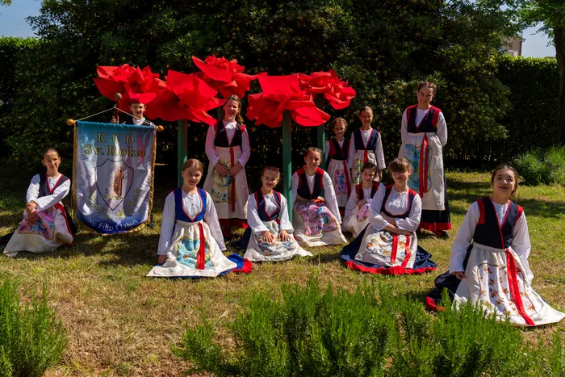
Three threads run
all year long.
Heritage, sport and celebration — the three currents the calendar is woven from. Open a gallery to see each one in full colour.
Cultural & religious eventsFolklore ensembles (KUD-ovi), processions & klapa nights
View more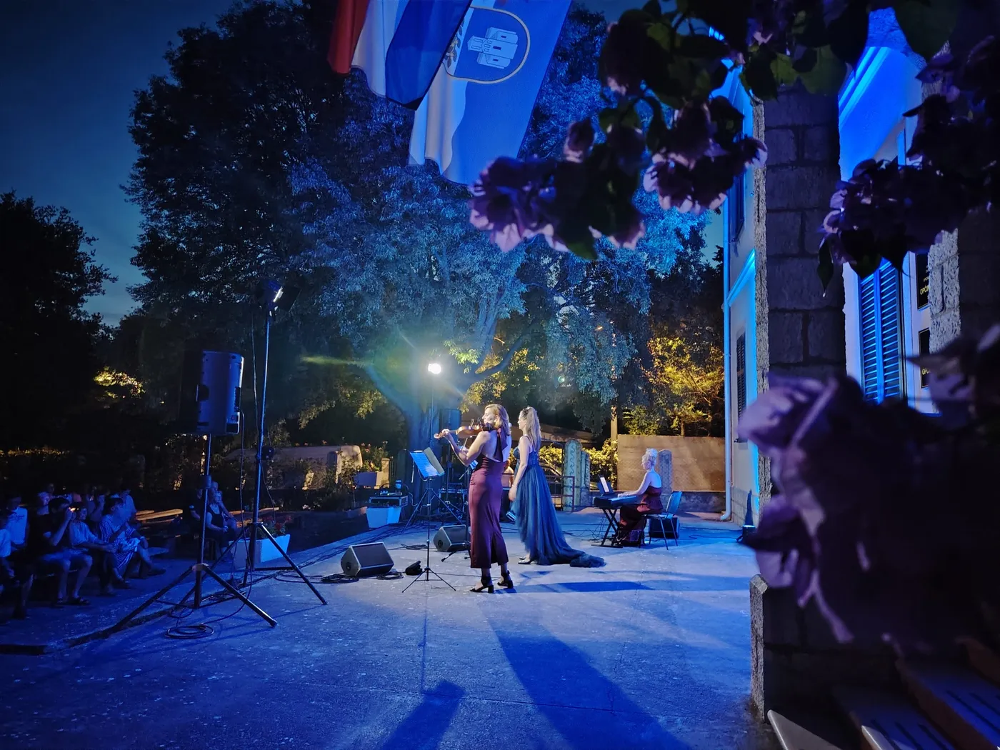
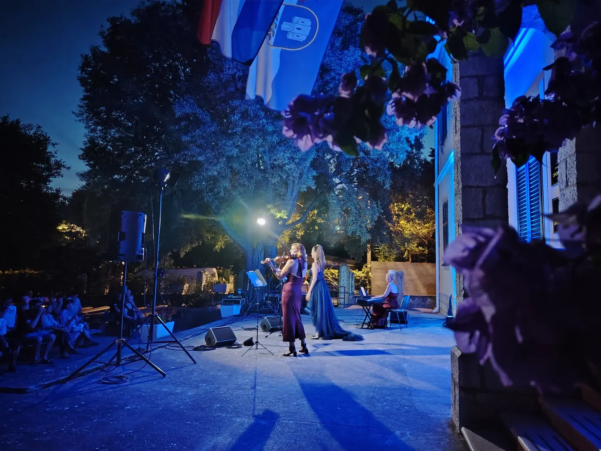
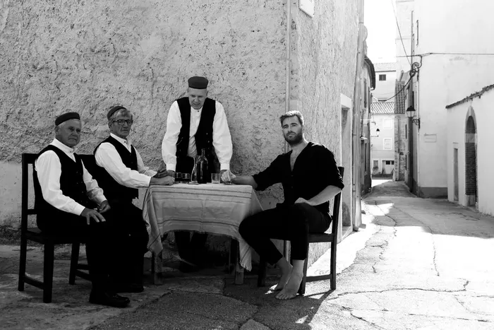
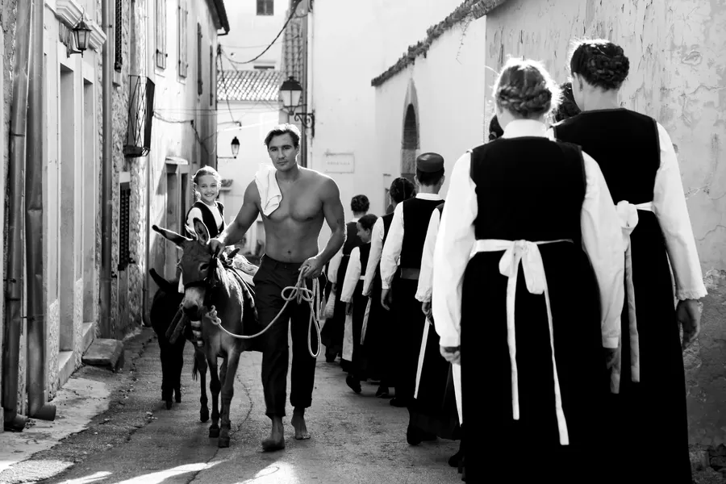
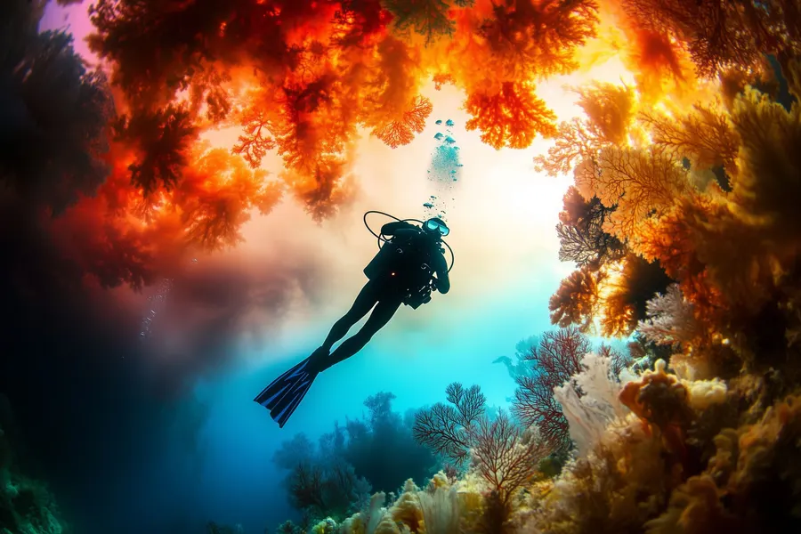
Sports eventsBike rides, open-water races, the summer swimming school & regattas
View more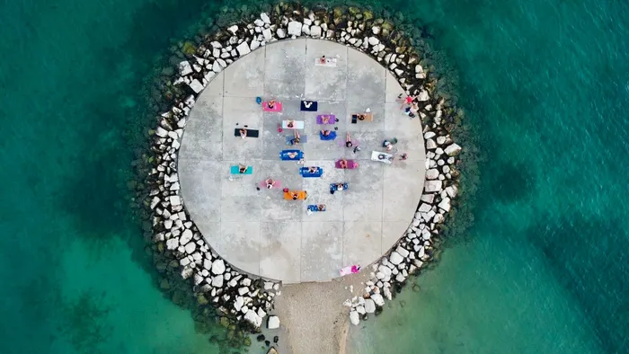
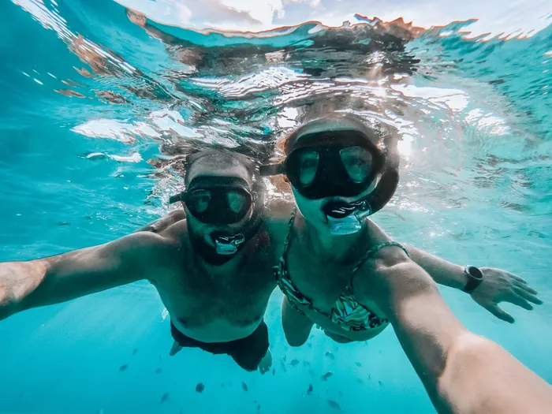
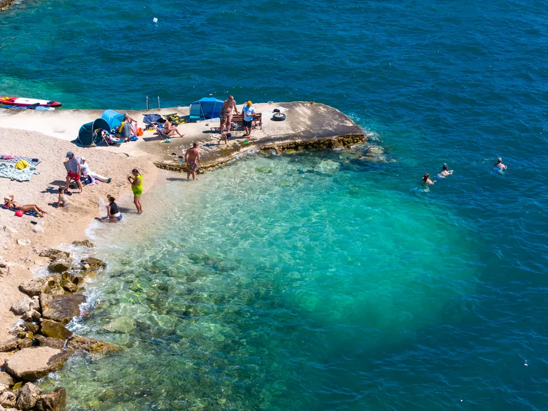
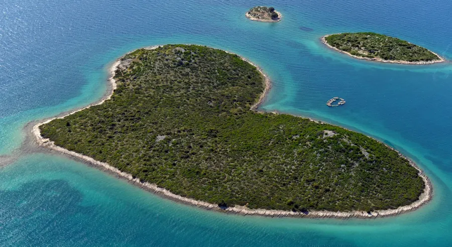
Local festivals & fairsMaraška Fest, the Festival of Flowers & the summer night markets
View more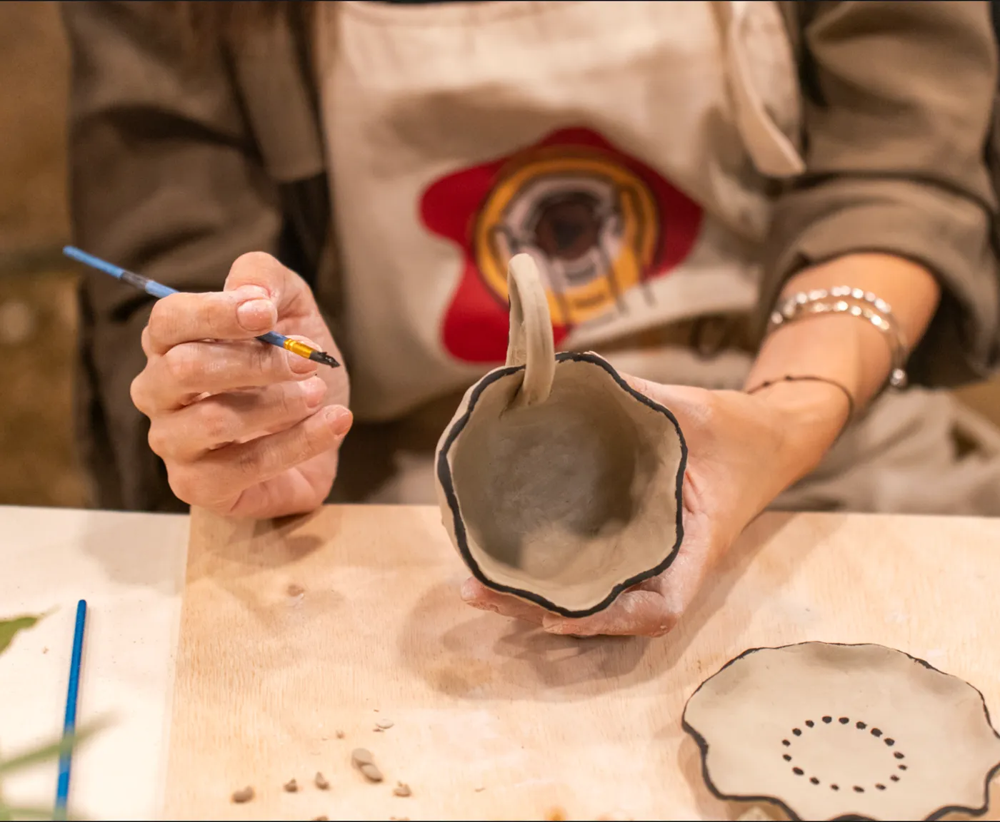
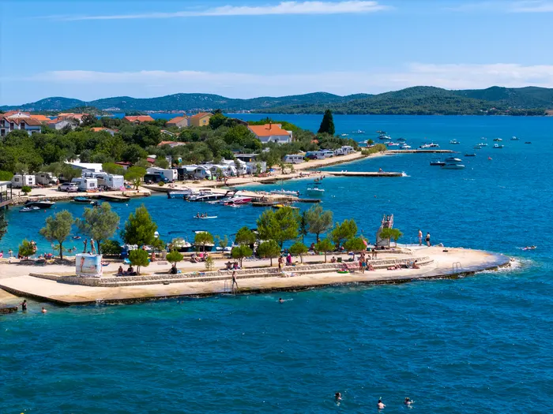
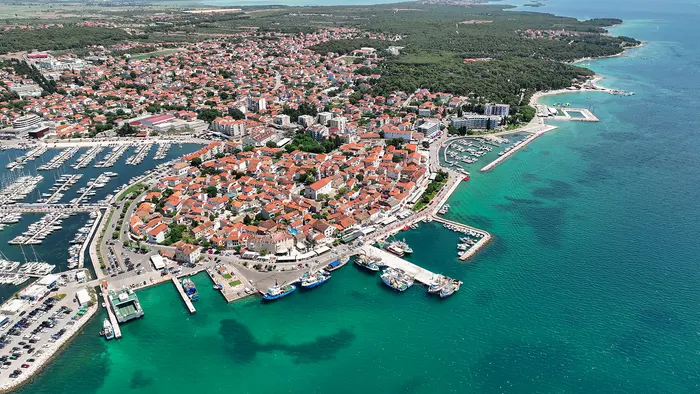
Festival of Flowers.
For one weekend in June the whole town turns into a sea of colour — flower carpets down the riva, a petal-strewn parade, and konobas spilling into the streets. It is the single busiest day of our year, and the one most worth planning a trip around.
Read more